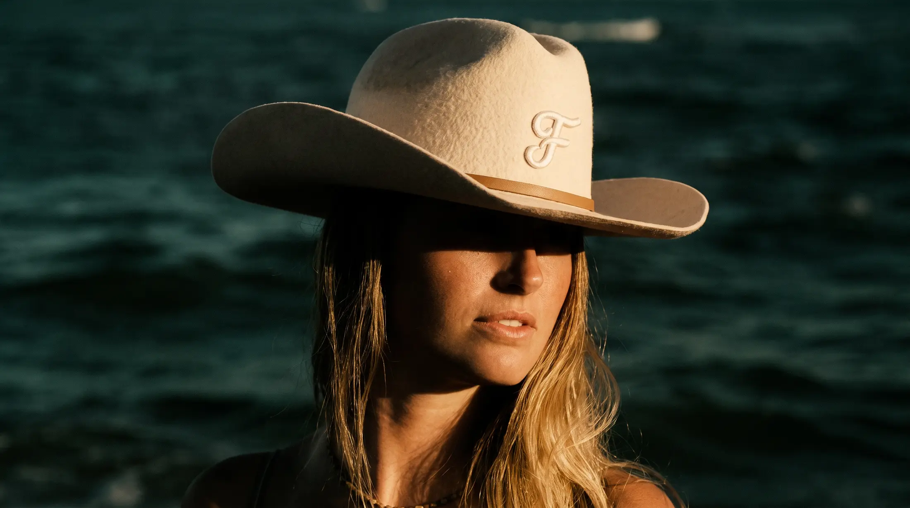
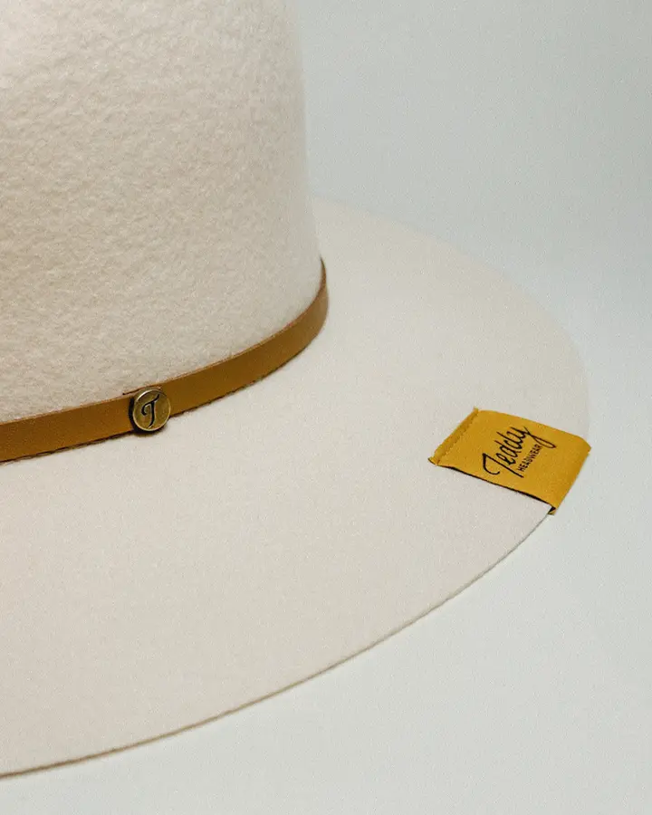
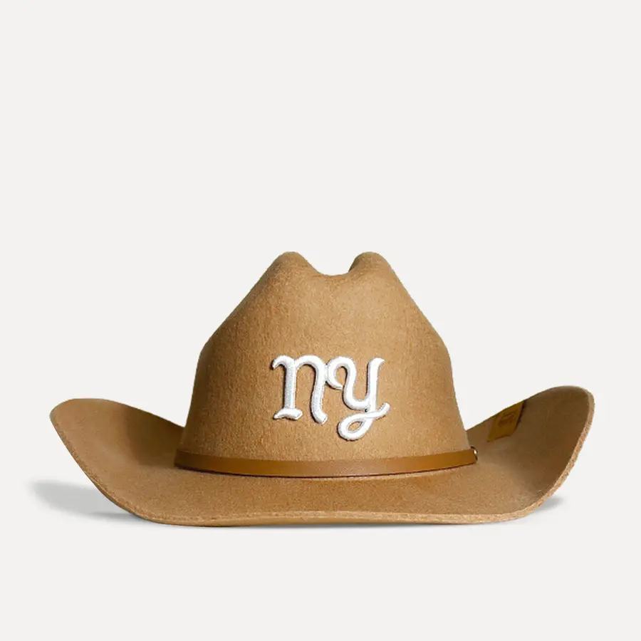
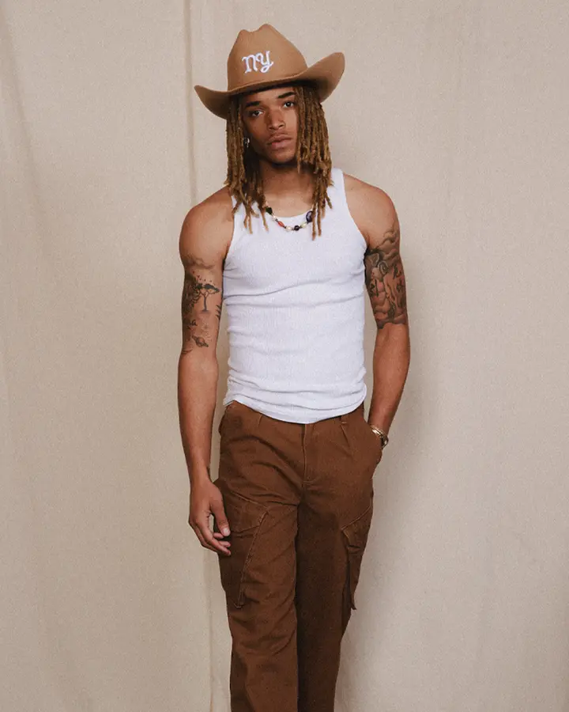
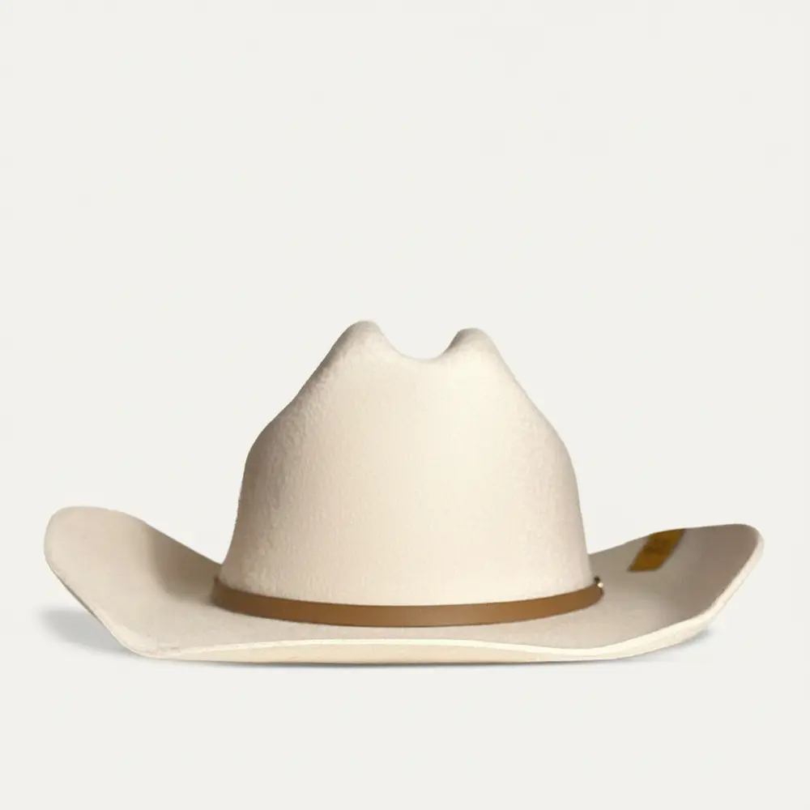
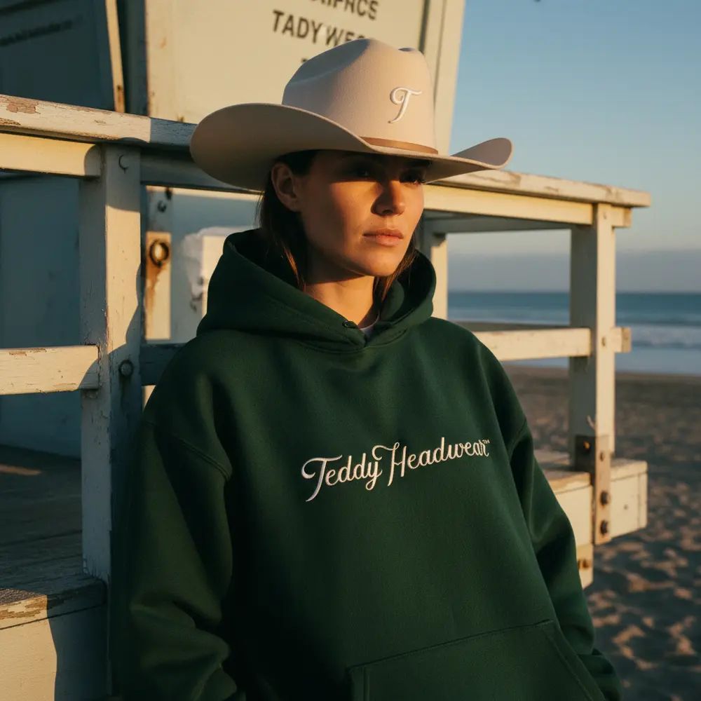
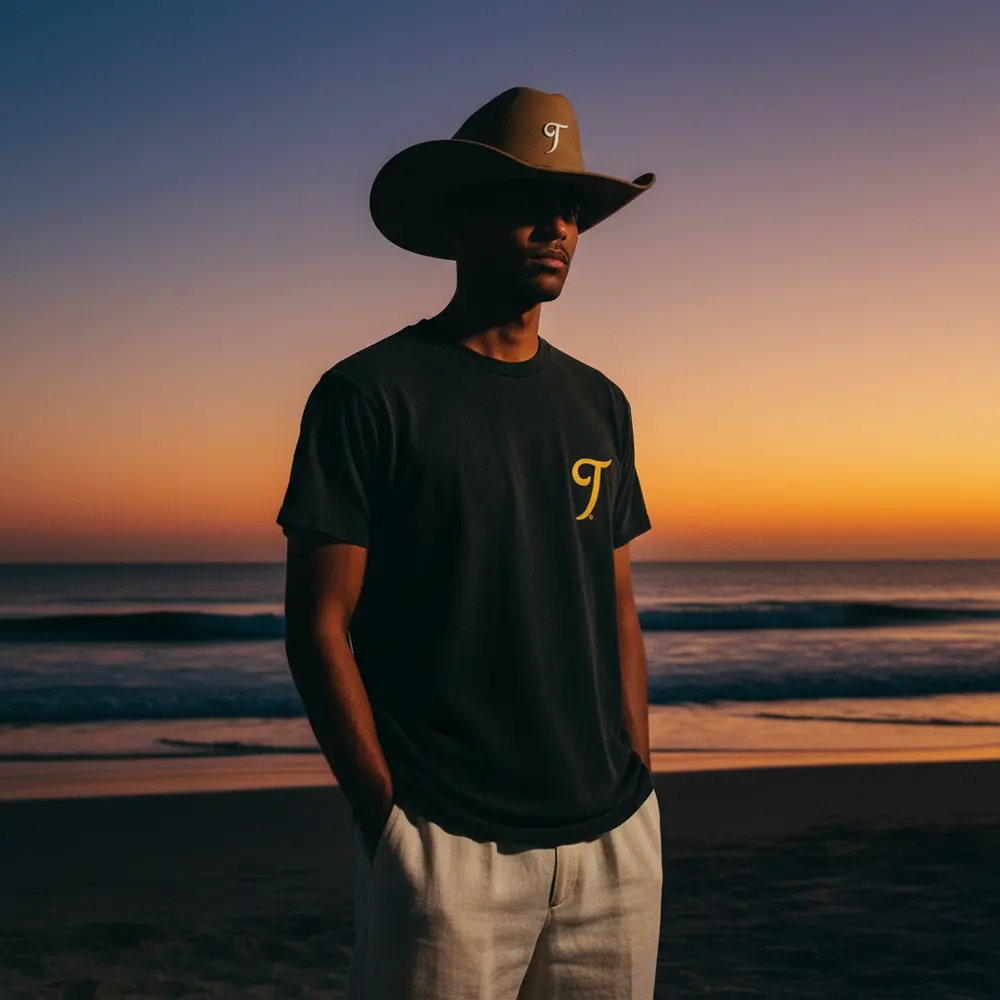

Pillar 01
Western roots
The cowboy and the fedora are the two shapes we build on. We keep the proportions honest: a tall, pinched crown and a brim with some reach. Then we keep the details clean.



Teddy Headwear was born in Jupiter, Florida. We take traditional Western silhouettes and give them a contemporary line, then finish each one with original embroidered artwork. Every hat is 100% wool, in cream or brown, with a city on the crown.
Every photo, caption and package should be able to point back to at least one of these.
The cowboy and the fedora are the two shapes we build on. We keep the proportions honest: a tall, pinched crown and a brim with some reach. Then we keep the details clean.

We're from Jupiter, not Jackson Hole. Salt air, hard Florida sun, the Atlantic on the horizon. The hat belongs on the beach as much as on the ranch.



The city monogram is the signature, embroidered on the crown. The new Monogram Studio opens it up: your letters, stitched on your hat.
One hat, four places it lives. Each city gets its own light, palette and wardrobe. The brim shadow ties them together, so any frame from any city reads as Teddy.
Salt, horses and first light on the Atlantic. Home.

Wet streets after midnight. A hat that holds its own under a streetlamp.


Palm shadows, white paint and chrome. Going nowhere in particular, in style.


A motel sign, an old pickup and the desert turning blue.

Our signature frame. One hard light, and the brim does the work: a clean line of shadow across the face, eyes kept dark, the hat lit like the hero it is.
A single source: open sun or a bare bulb. No fill, no bounce.
The brim cuts the face at the nose. The eyes stay in shadow.
Let shadows go deep. Highlights lean warm, toward the gold of the lining.
Fine film grain and real texture. Wool should look like wool.
 OriginalNoir
OriginalNoir

OriginalNoir
The palette comes straight off the hat: the felt, the paper-white crown, the silk lining, the leather band. Gold is the accent and the call to action; use it like the label, small and exact.
Dominant dark. Backgrounds, hat box, type on bone.
Paper. Product backgrounds, cards, body text on felt.
Accent and CTAs. Text on it is #2A1E05.
The leather band. Small details, rules, numerals.
Teal and Ink live inside the photography, not in the interface. They are where the water and the shadows should land when grading.
Three faces, three jobs. Headlines pair wide caps with a single Bodoni italic word, the way a stamped label sits next to a hand-stitched letter.
Width 125, weight 800, always uppercase, tight leading. Headlines and big numbers.
One word per headline, lowercase. Also for mood lines and pull quotes.
400 / 500, uppercase, 12px, tracked +.14em. Eyebrows, specs, prices, captions.
Your city on top.
The cowboy ($150) and the fedora ($140), each in cream and brown, each with T, F, NY or LA on the crown. Sixteen hats, one family.

Past the four cities: your own letters, embroidered on the crown. A wedding date's initials, a family name, a hometown. Pick the hat, pick the letters, pick the thread.
Eight pieces that carry the script and the T monogram off the hat, in the same felt, bone, gold and saddle.


Script on bone. T on black. Gold on green.
Three people we're making this for. Sketches to keep the work honest, not data.
“I want a hat that says home, not costume.”
“I wear it with a leather jacket, not boots.”
“The letters are the whole point.”
We talk like the hat looks: clean lines, real materials, nothing extra. Short sentences. Specific nouns. Confidence without shouting.
A new frontier.
Wool outside. Silk where it counts.
Your city on top.
Pick your letters.
From Jupiter to the edge of the map.
Wear the brim low.
Opening a Teddy box should feel like lifting the hat for the first time: green felt, a flash of gold, and something written by hand.


A plan in phases, not dates. Each phase opens when the one before it is steady.